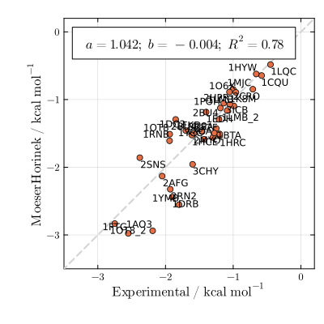
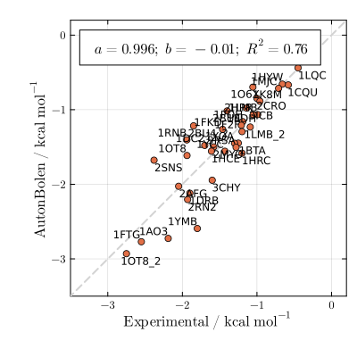
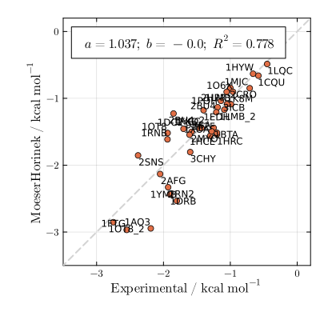
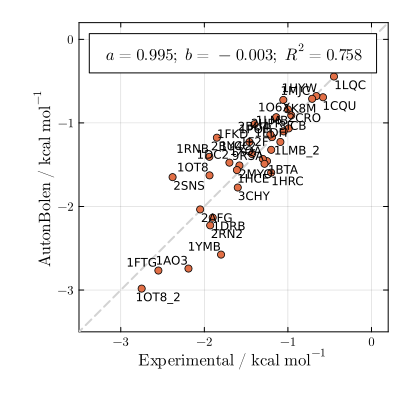
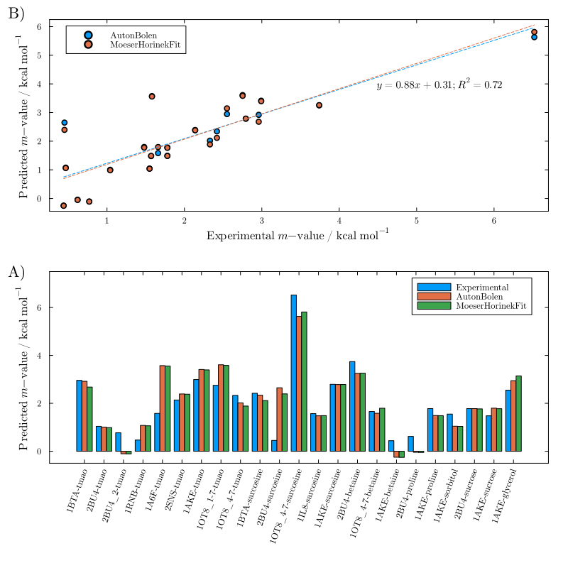
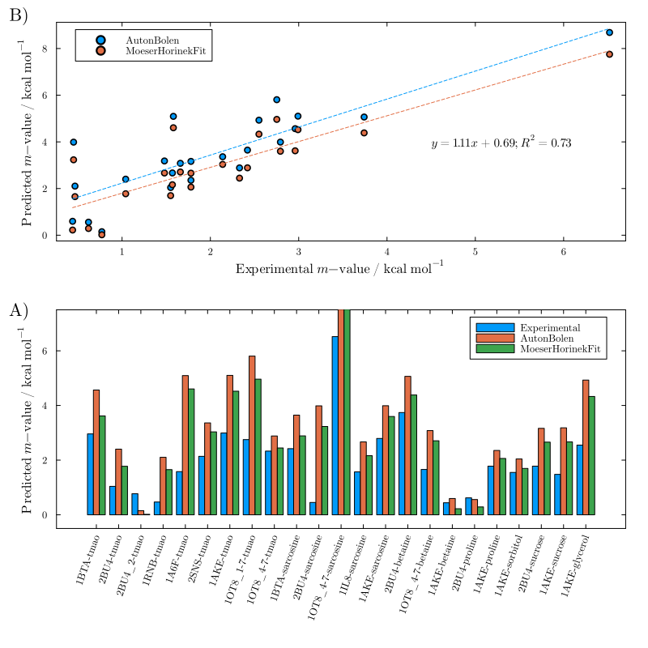
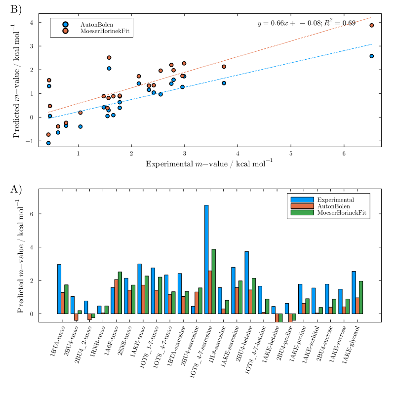
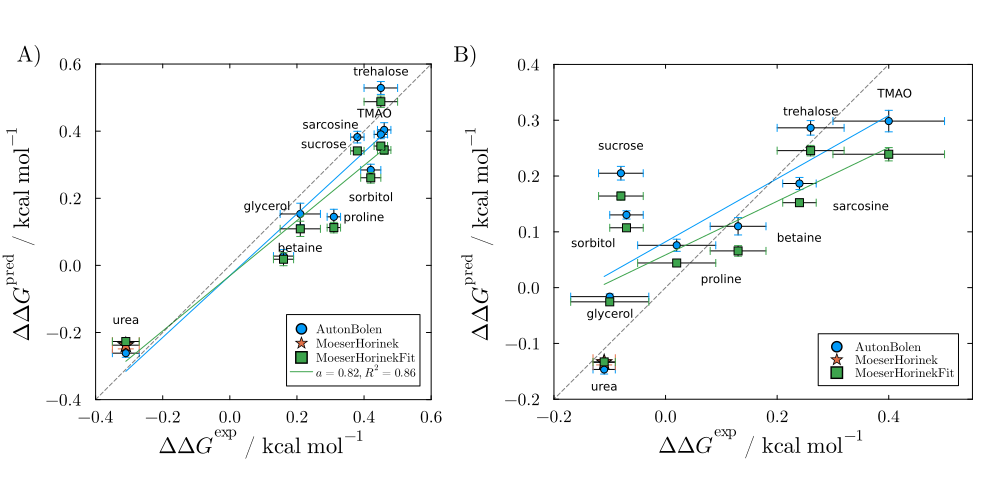
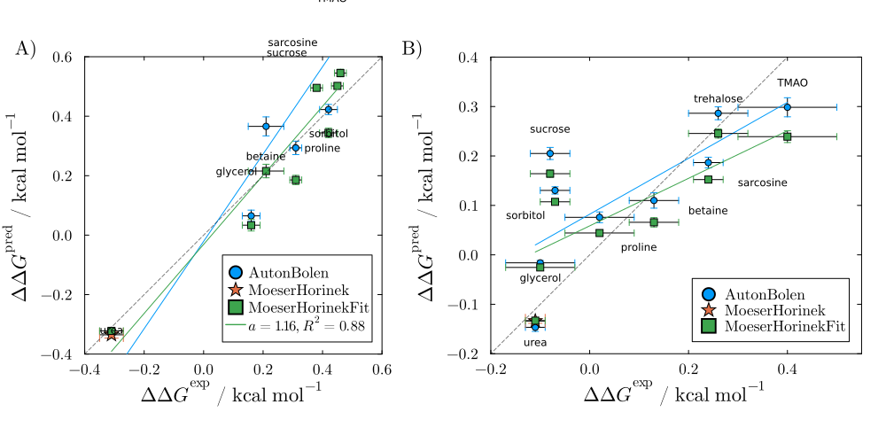
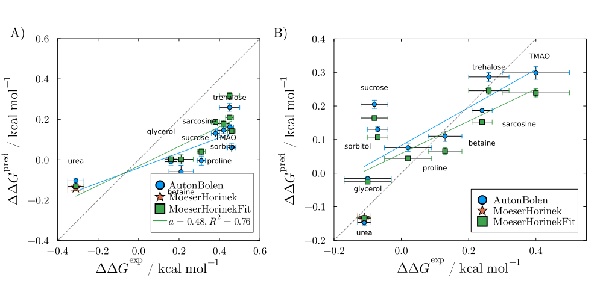

Experimental
using LAPMUrea (Creamer)
plot_experimental(MoeserHorinek; sasas_from=LAPM.creamer_sasa)
plot_experimental(AutonBolen; sasas_from=LAPM.creamer_sasa)
Urea (Server)
plot_experimental(MoeserHorinek; sasas_from=LAPM.server_sasa)
plot_experimental(AutonBolen; sasas_from=LAPM.server_sasa)
Other osmolytes
Using mean denatured Creamer model
other_osmolytes(; type=2)
Using maximally denatured Creamer model
other_osmolytes(; type=3)
Using minimially denatured Creamer model
other_osmolytes(; type=1)
SH3 and DM1 - Pielak data.
Pannel A is for unfolding of SH3, pannel B for the dissociation of the GB1 dimer.
using PDBTools
using LAPM: os_pdb_filesUsing mean unfolded Creamer model (in A)
plt1 = plot_rydeen_folding(read_pdb(os_pdb_files["2AZS"]); type=2)
plt2 = plot_rydeen_dimmer(read_pdb(os_pdb_files["2RMM"]))
plot_rydeen_both(plt1, plt2)
Using maximally unfolded Creamer model (in A)
plt1 = plot_rydeen_folding(read_pdb(os_pdb_files["2AZS"]); type=3)
plt2 = plot_rydeen_dimmer(read_pdb(os_pdb_files["2RMM"]))
plot_rydeen_both(plt1, plt2)
Using minimally unfolded Creamer model (in A)
plt1 = plot_rydeen_folding(read_pdb(os_pdb_files["2AZS"]); type=1)
plt2 = plot_rydeen_dimmer(read_pdb(os_pdb_files["2RMM"]))
plot_rydeen_both(plt1, plt2)